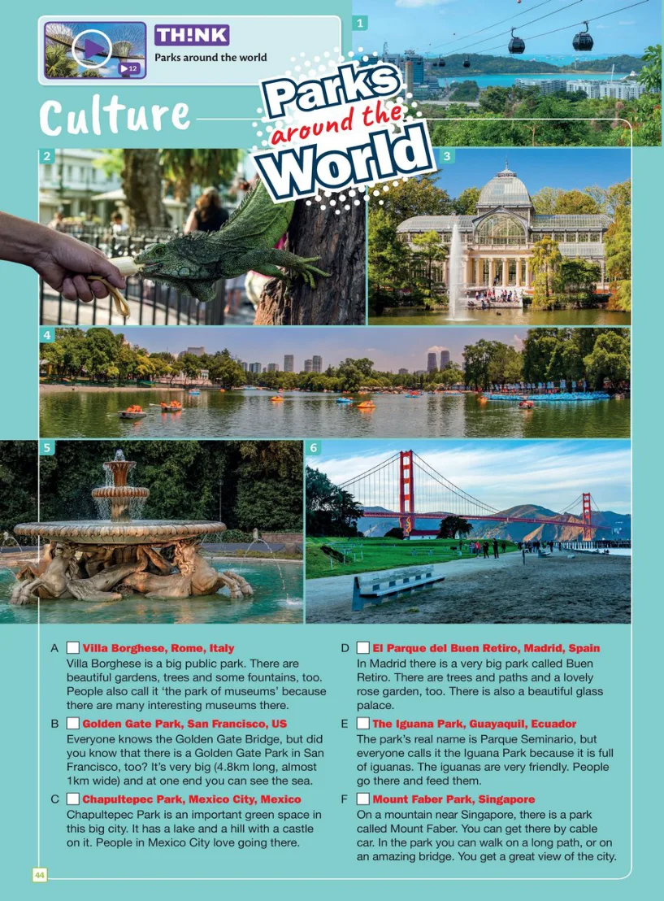

<!doctype html>
<html lang="zh-CN">
<meta charset="utf-8">
<meta name="viewport" content="width=device-width, initial-scale=1">
<title>Parks around the world · Classroom Survivors</title>
<link rel="stylesheet" href="interactive_notes_poc.css?v=2026-11-03a">
<link rel="stylesheet" href="think_parks.css?v=5">
<script defer src="think_parks_lesson.js?v=1"></script>
<script defer src="think_parks_audio.js?v=2"></script>
<script defer src="think_parks_image_index.js?v=1"></script>
<script defer src="think_parks.js?v=7"></script>
<script defer src="notes_speech.js?v=2026-11-03a"></script>
<header class="toolbar">
  <div class="toolbar-title"><a href="./">Classroom Survivors</a><span>Think Starter · Unit 4 · p.44</span><b>点读预习</b></div>
  <nav><a href="#words">1 预习词汇</a><a href="#article">2 点读课文</a></nav>
  <p>点单词或句子听发音，也可以点麦克风试读。</p>
</header>
<main>
  <section id="words"><h2>1. 预习词汇</h2><p>点击词卡听发音，然后跟读。可以再听一次。</p><div id="cards" class="cards"></div></section>
  <section id="article">
    <h2>2. 点读课文</h2>
    <p>点击课文图片上的句子，听原声并查看中文。</p>
    <div id="scan"></div>
  </section>
  <div class="reader-study-action"><button type="button" id="reader-study-start">开始学习</button></div>
</main>
<aside class="player" aria-label="点读播放器">
  <div class="player-icon" aria-hidden="true">♪</div>
  <div class="player-copy"><p id="nowPlaying">点一下，听一听。</p><small id="playerStatus" role="status" aria-live="polite">单词和英文句子都可以点读。</small></div>
  <label class="speed-label">速度<select id="speed"><option value="1">正常</option><option value="0.8">慢一点</option></select></label>
  <button id="replay" type="button" disabled>↻ 再听一次</button><button id="stop" type="button" disabled>■ 停止</button>
</aside>
</html>
